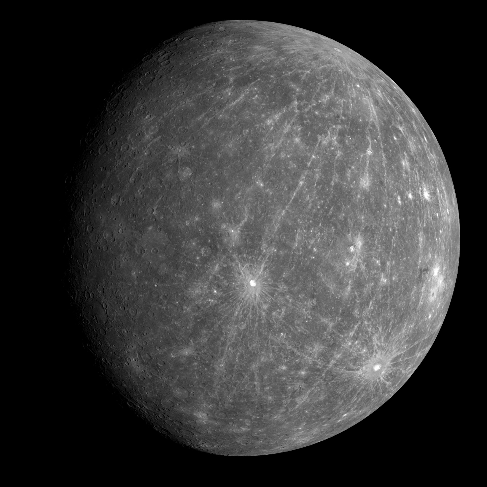

Discover the Planets, Moons, and Mysteries of Space
The Sun: The Heart Of Our Solar System

The solar system is our home in the Universe, a vast and dynamic
region region of space filled with fascinating celestial objects
At its heart lies the Sun, a star that provides light heat, and
energy to sustain life on Earth. Orbiting the Sun are Planets,
moons, asteroids, comets, and other mysterious bodies, each with
its unqiue story to tell.
The Sun is a giant, glowing ball of hot gas at the center of
our solar system. It is the most important source of energy for life on Earth
and influences everything in the solar system through its immense gravitational
pull and radiant energy
The Sun is an enromus sphere, with a diamter of 1.39 million kilometers
or 864,000 miles making it 109 time wider than Earth. It is so massive that
it contains 99.8% of the total mas of the solar system. The Sun is made up
primarly of hydrogen and helium with trace amounts of other elements.